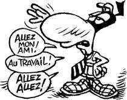

1) Prendre connaissance des différentes étapes de la démarche de conception
temps conseillé : 30''
2) Prendre connaissance de l'etude de cas de la lampe Trecking
temps conseillé : 1H
3) Prendre connaissance de l'etude de cas du portail solaire
temps conseillé : 1H
4) En analysant les documents ressources, completer le cahier de charges de l'etude de cas : Serrure biometrique
temps conseillé : 1H30''
5) En analysant les documents ressources, completer le cahier de charges de l'etude de cas : batiment communal MORTAGNE
temps conseillé : 1H30''

Created with the Personal Edition of HelpNDoc: Easy EBook and documentation generator